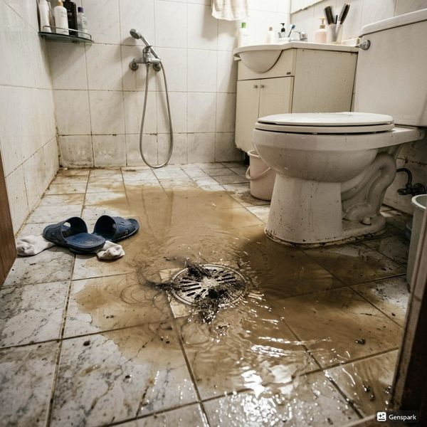
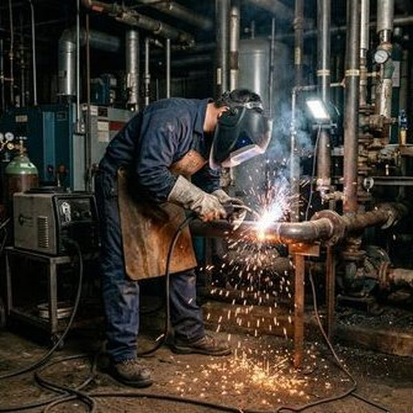
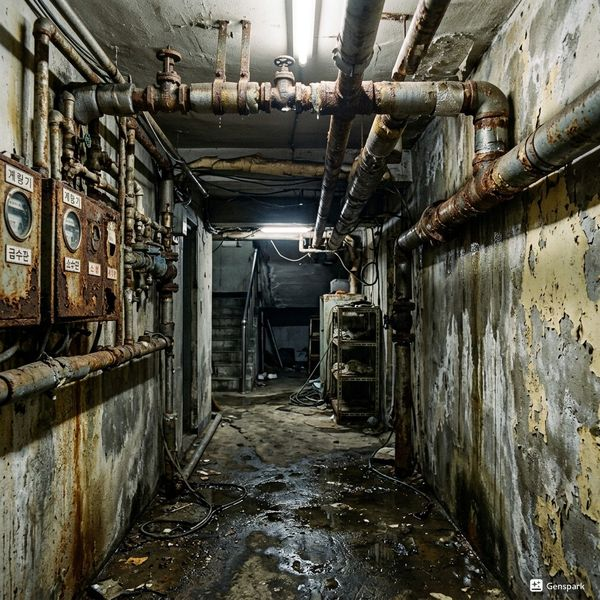

하수관 CCTV 조사란 무엇인가
하수관 CCTV 조사는 소형 카메라를 배관 내부에 삽입하여 실시간 영상으로 배관 상태를 확인하는 기술입니다. 배관의 균열, 부식, 이물질 축적, 나무뿌리 침투, 관 이탈 등을 육안으로 정확하게 진단할 수 있어 불필요한 굴착이나 과도한 수리를 방지합니다. 공동주택에서는 세대 간 배관이 연결되어 있어 한 세대의 문제가 다른 세대에 영향을 줄 수 있습니다. CCTV 조사를 통해 문제 발생 지점과 원인을 정확히 파악하면 책임 소재를 명확히 할 수 있고, 최소한의 비용으로 정확한 수리가 가능합니다.

제우스시설관리의 CCTV 조사 서비스
제우스시설관리는 최신 고해상도 CCTV 내시경 장비를 보유하고 있으며, 50mm~300mm 구경의 다양한 배관에 대응 가능합니다. 조사 과정은 ①배관 입구 확인 → ②카메라 삽입 및 촬영 → ③실시간 모니터링 → ④영상 기록 및 보고서 작성 순으로 진행됩니다. 조사 결과 영상과 사진은 고객에게 제공되며, 이를 바탕으로 최적의 보수 방안을 제안합니다. 관리사무소나 입주자 대표회의에서 공용 배관 점검을 계획하고 있다면 제우스시설관리에 문의하세요. 단체 점검 시 세대당 비용을 크게 절감할 수 있으며, 28분 내 출동 서비스도 이용 가능합니다.

자주 묻는 질문
Q. CCTV 조사 비용은 얼마인가요?
A. 배관 구경과 길이에 따라 다르지만, 세대당 10~30만원 수준이며, 단체 점검 시 할인이 적용됩니다.
Q. CCTV 조사 시 단수가 되나요?
A. 조사 대상 배관에 따라 다르지만, 배수관 조사는 단수 없이 진행 가능하며, 약 30분~1시간 소요됩니다.